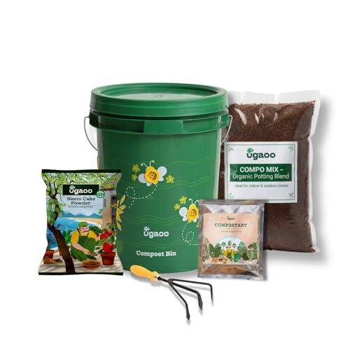
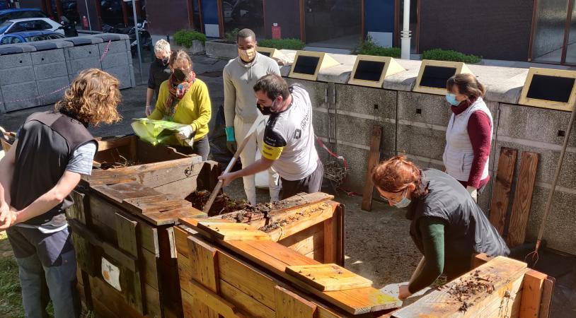
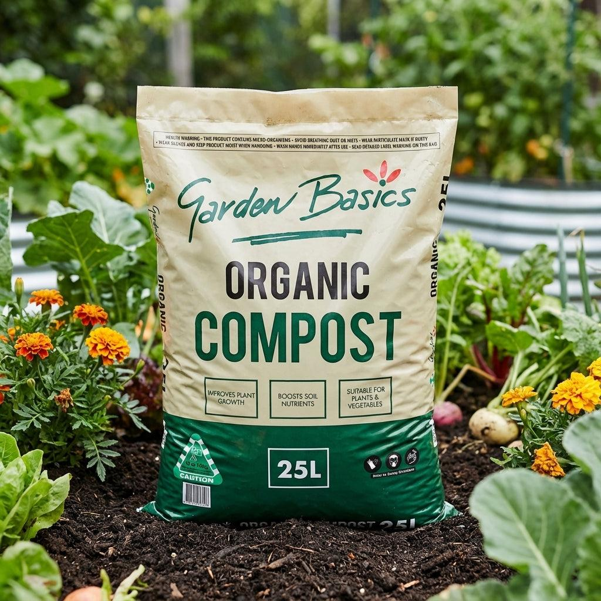

OUR SERVICES
Practical Solutions for Better Waste Management
From everyday kitchen waste to community collection and compost delivery, CompostCare makes responsible waste management simple.
01
Kitchen Waste Composting Kits
Home composting kits with suitable containers and essential materials for composting everyday kitchen waste.
Explore Service

02
Community Composting
Shared composting facilities that collect and process organic waste from multiple households into nutrient-rich compost.
Explore Service
03
Waste Pickup Services
Scheduled collection of segregated organic waste from homes and communities for proper composting.
Explore Service

04
Compost Delivery
Quality compost collected from our processing facilities and delivered to homes, gardens, and community spaces.
Explore Service